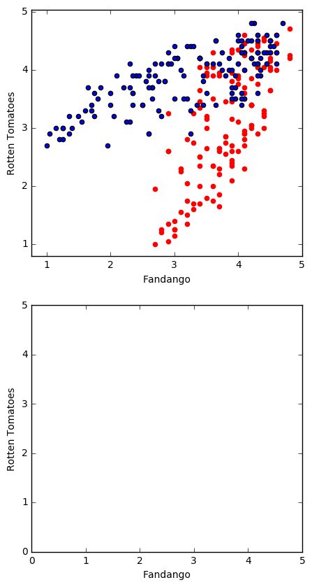

matplot的使用之二:柱状图、散点图
import pandas as pd
reviews = pd.read_csv('fandango_scores.csv')
cols = ['FILM', 'RT_user_norm', 'Metacritic_user_nom', 'IMDB_norm', 'Fandango_Ratingvalue', 'Fandango_Stars']
norm_reviews = reviews[cols]
print(norm_reviews[:1])
FILM RT_user_norm Metacritic_user_nom \
0 Avengers: Age of Ultron (2015) 4.3 3.55
IMDB_norm Fandango_Ratingvalue Fandango_Stars
0 3.9 4.5 5.0
import matplotlib.pyplot as plt
from numpy import arange
#The Axes.bar() method has 2 required parameters, left and height.
#We use the left parameter to specify the x coordinates of the left sides of the bar.
#We use the height parameter to specify the height of each bar
num_cols = ['RT_user_norm', 'Metacritic_user_nom', 'IMDB_norm', 'Fandango_Ratingvalue', 'Fandango_Stars']
bar_heights = norm_reviews.ix[0, num_cols].values
#print (norm_reviews.dtpye())
#print(help(norm_reviews.dtpye))
bar_positions = arange(5) + 0.75
#print bar_positions
fig, ax = plt.subplots()
ax.bar(bar_positions, bar_heights, 0.5)
plt.show()
#By default, matplotlib sets the x-axis tick labels to the integer values the bars
#spanned on the x-axis (from 0 to 6). We only need tick labels on the x-axis where the bars are positioned.
#We can use Axes.set_xticks() to change the positions of the ticks to [1, 2, 3, 4, 5]:
num_cols = ['RT_user_norm', 'Metacritic_user_nom', 'IMDB_norm', 'Fandango_Ratingvalue', 'Fandango_Stars']
bar_heights = norm_reviews.ix[0, num_cols].values
bar_positions = arange(5) + 0.75
tick_positions = range(1,6)
fig, ax = plt.subplots()
ax.bar(bar_positions, bar_heights, 0.5)
ax.set_xticks(tick_positions)
ax.set_xticklabels(num_cols, rotation=90)
ax.set_xlabel('Rating Source')
ax.set_ylabel('Average Rating')
ax.set_title('Average User Rating For Avengers: Age of Ultron (2015)')
plt.show()
import matplotlib.pyplot as plt
from numpy import arange
num_cols = ['RT_user_norm', 'Metacritic_user_nom', 'IMDB_norm', 'Fandango_Ratingvalue', 'Fandango_Stars']
bar_widths = norm_reviews.ix[0, num_cols].values
bar_positions = arange(5)+0.75
tick_positions = range(1,6)
fig,ax = plt.subplots()
ax.barh(bar_positions, bar_widths)
ax.set_yticks(tick_positions)
ax.set_yticklabels(num_cols)
ax.set_ylabel('Rating Source')
ax.set_xlabel('Average Rating')
ax.set_title('Average User Rating For Avengers: Age of Ultron (2015)')
plt.show()
#Let's look at a plot that can help us visualize many points.
fig,ax = plt.subplots()
ax.scatter(norm_reviews['Fandango_Ratingvalue'], norm_reviews['RT_user_norm'])
ax.set_xlabel('Fandango')
ax.set_ylabel('Rotten Tomatoes')
plt.show()

# Switching Aixes
fig = plt.figure(figsize=(5,10))
ax1 = fig.add_subplot(2,1,1)
ax2 = fig.add_subplot(2,1,2)
ax1.scatter(norm_reviews['Fandango_Ratingvalue'], norm_reviews['RT_user_norm'],color='red')
ax1.set_xlabel('Fandango')
ax1.set_ylabel('Rotten Tomatoes')
ax1.set_xticks(range(0,6))
ax1.set_yticks(range(0,6))
ax2.scatter(norm_reviews['RT_user_norm'], norm_reviews['Fandango_Ratingvalue'])
ax2.set_xlabel('Fandango')
ax2.set_ylabel('Rotten Tomatoes')
ax2.set_xticks(range(0,6))
ax2.set_yticks(range(0,6))
plt.show()
